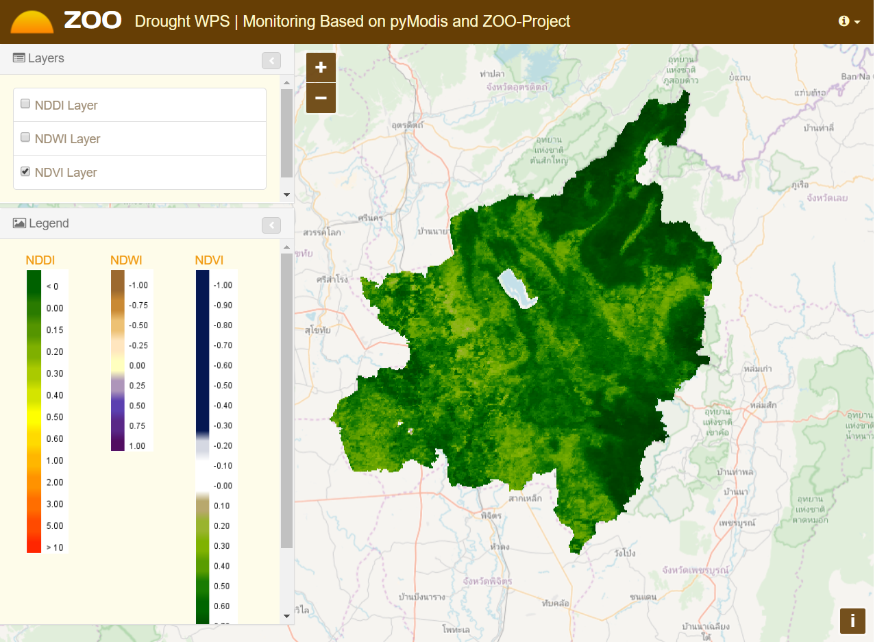
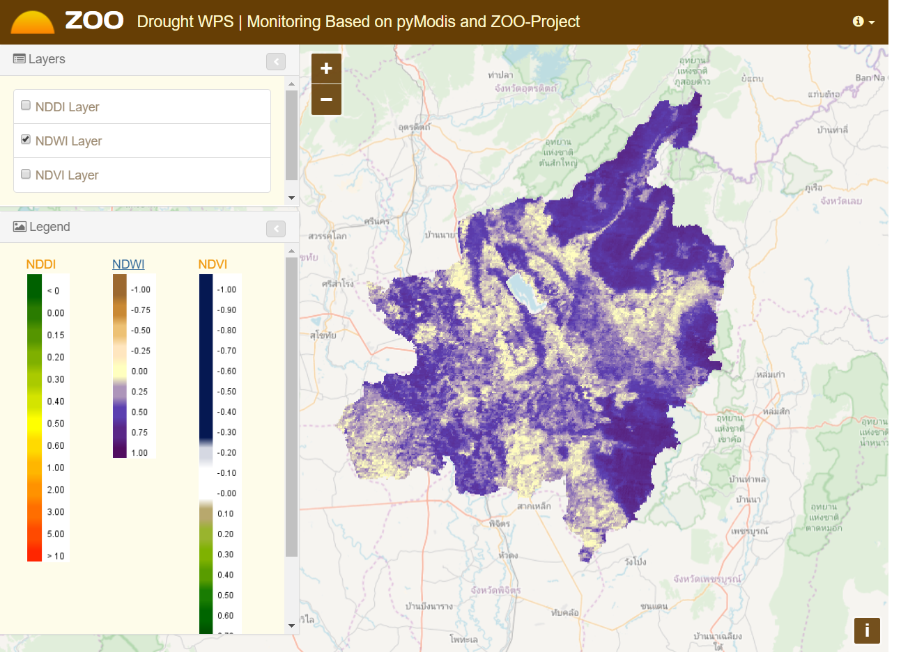

○ ที่มาและความสำคัญ
○ วัตถุประสงค์
○ พื้นที่ศึกษา
○ ข้อมูลและเครื่องมือ
○ กรอบแนวคิด
○ วิธีการศึกษา
○ การทดสอบระบบและผลการศึกษา
○ สรุปและข้อเสนอแนะ
• ในช่วงไม่กี่ปีที่ผ่านมาประเทศไทยเผชิญกับวิกฤตภัยแล้งอย่างรุนแรงก่อให้เกิดความเสียหายและส่งผลกระทบเป็นอย่างมากในภาคเกษตรกรรมและภาคเศรษฐกิจ
• การติดตามพื้นที่เสี่ยงภัยแล้งโดยทั่วไปมักจะใช้ข้อมูลทางด้านภูมิอากาศ ซึ่งข้อมูลที่ได้มามักจะไม่ครอบคลุมเต็มพื้นที่และจะต้องใช้ระยะเวลานานในการวิเคราะห์
• การใช้ข้อมูลภาพจากดาวเทียมเป็นอีกทางเลือกหนึ่งในการติดตามพื้นที่เสี่ยงภัยแล้งที่สามารถตอบสนองความต้องการได้ทันต่อเหตุการณ์
| เครื่องมือในการพัฒนา | ชื่อของซอฟต์แวร์ | เว็บไซต์ |
|---|---|---|
| Operating System | Lubuntu 14.04 LST | http://releases.ubuntu.com/14.04/ |
Desktop Applications |
GRASS GIS | https://grass.osgeo.org |
| QGIS | http://www.qgis.org | |
Geospatial Libraries |
pyModis | http://www.pymodis.org |
| GDAL/OGR | http://www.gdal.org | |
Web Mapping |
ZOO-Project | http://zoo-project.org |
| GeoServer | http://geoserver.org | |
| OpenLayers | https://openlayers.org |
WPS ถูกออกแบบมาเพื่อให้เป็นมาตรฐานในการพัฒนาเครื่องมือทางด้านระบบสารสนเทศภูมิศาสตร์ ที่ให้บริการผ่านเครือข่ายอินเตอร์เน็ต ซึ่ง WPS มุ่งมั่นที่จะทำงานในส่วนของ Geoprocessing แบบอัตโนมัติ โดยใช้ศาสตร์ทางด้านเชิงพื้นที่ร่วมกับสถาปัตยกรรมเชิงบริการ (SOA)
WPS จะประกอบไปด้วยชุดคำสั่ง 3 คำสั่ง ได้แก่
1) GetCapabilities คือ ชุดคำสั่งสำหรับการเรียกดูรายละเอียดต่างๆ ทั้งหมด สำหรับแม่ข่ายที่ให้บริการประมวลผลข้อมูลผ่านอินเตอร์เน็ต
2) DescribeProcess คือ คำสั่งสำหรับการเรียกดูรายละเอียดสำหรับ Processing Feature แต่ละตัวบนแม่ข่าย เช่น ประเภทของการประมวลผล พารามิเตอร์และผลลัพธ์ที่ได้
3) Execute คือ ชุดคำสั่งการประมวลผลโดยผู้ใช้จะทำการระบุค่าพารามิเตอร์ต่างๆ สำหรับการประมวลผลตามที่ได้กำหนดไว้ ผลลัพธ์ที่ได้จากชุดคำสั่งจะเป็นผลลัพธ์ของการประมวลผล ซึ่งจะอยู่ในรูปแบบ File หรือรูปแบบ Service
ZOO-Project คือแพลตฟอร์มการบริการประมวลผลบนเว็บแบบรหัสเปิด ที่เขียนด้วยภาษา C, Python และ JavaScript ซึ่งใช้มาตรฐาน WPS 1.0.0 และ WPS 2.0.0 ตามข้อกำหนดขององค์กรความร่วมมือข้อมูลภูมิศาสตร์ระบบเปิด (OGC)
ZOO-Project ประกอบด้วย 4 ส่วนได้แก่
• ZOO-Kernel
• ZOO-Services
• ZOO-API
• ZOO-Client
pyModis เป็นโมดูลส่วนเสริมของภาษา Python สำหรับใช้ทำงานกับข้อมูล MODIS โดยมีคำสั่งการดาวน์โหลด (Download) การต่อภาพ (Mosaic) และการแปลง (Convert) ไฟล์ภาพในรูปแบบ HDF และระบบพิกัด เป็นรูปแบบอื่น ๆ
1) ติดตั้งระบบเครื่องแม่ข่ายและดำเนินการติดตั้งซอฟต์แวร์รหัสเปิด
2) เขียนชุดคำสั่งในการดาวน์โหลดข้อมูลถ่ายภาพจากดาวเทียมในระวางพื้นที่ h27v07 ด้วยไลบรารี่ pyModis โดยใช้โมดูล modis_download.py
3) เขียนชุดคำสั่งในการแปลงรูปแบบของไฟล์ HDF-EOS ให้อยู่ในรูปแบบของ GeoTIFF เพื่อแยกแบนด์ทั้ง 7 แบนด์โดยใช้โมดูล modis_convert.py พร้อมทั้งแปลงพิกัดให้อยู่ในระบบพิกัดแบบ WGS 84 / UTM zone 47N (EPSG:32647)
1) นำเข้าข้อมูลภาพถ่ายจากดาวเทียมโดยใช้โมดูล r.import
r.import input=/modis/sur_refl_b01.tif
output=b01
resample=nearest extent=input
resolution=region
2) คำนวณค่าดัชนีผลต่างพืชพรรณ (NDVI) NDVI = (NIR – RED) / (NIR + RED)
r.mapcalc expression= ndvi =
float(b02 - b01)/float(b02 + b01)
3) คำนวณค่าดัชนีผลต่างความชื้น (NDWI)
NDWI = (NIR – SWIR) / (NIR + SWIR)
r.mapcalc expression= ndwi =
float(b02 - b07)/float(b02 + b07)
4) คำนวณค่าดัชนีผลต่างความแห้งแล้ง (NDDI)
NDDI = (NDVI – NDWI) / (NDVI + NDWI)
r.mapcalc expression= nddi =
float(ndvi - ndwi)/float(ndvi + ndwi)
|  |  |
1) ระบบที่ทำการศึกษาและพัฒนาสามารถดาวน์โหลดและวิเคราะห์ข้อมูลภาพเพื่อหาพื้นที่เสี่ยงภัยแล้งได้โดยอัตโนมัติ โดยอาศัยการทำงานร่วมกันของ
pyModis, ZOO-Project, GRASS GIS และ GeoServer ที่ทำหน้าที่ในการประมวลผลข้อมูลและเผยแพร่ข้อมูลในรูปแบบ WMS
ทำให้ผู้ใช้งานสามารถเข้าถึงข้อมูลภูมิสารสนเทศจากเว็บเบราเซอร์หรือโปรแกรมทางด้านสารสนเทศภูมิศาสตร์ได้อย่างง่ายดาย
2) ผลการพัฒนาระบบสามารถพัฒนาไปใช้กับงานวิจัยที่เกี่ยวกับการวิเคราะห์เชิงพื้นที่ด้านอื่นๆ ได้
เนื่องจากระบบนี้ถูกพัฒนาขึ้นด้วยซอฟแวร์รหัสเปิดสำหรับภูมิสารสนเทศ
(FOSS4G) ตามมาตรฐานขององค์กรความร่วมมือข้อมูลภูมิศาสตร์ระบบเปิด (OGC) จึงสามารถปรับแก้สคริปท์ชุดคำสั่งต่างๆ ได้อย่างเสรี
3) เป็นระบบต้นแบบที่ใช้ซอฟแวร์รหัสเปิดสำหรับภูมิสารสนเทศ และเป็นตัวอย่างขั้นต้นสำหรับผู้ที่พัฒนาเกี่ยวกับระบบภูมิสารสนเทศผ่านเครือข่ายได้รู้และเข้าใจหลักการของระบบการบริการประมวลผลบนเว็บ
การศึกษาในครั้งนี้มุ่งเน้นในด้านการพัฒนาระบบการประมวลผลบนเว็บแบบอัตโนมัติเป็นหลัก จึงยังไม่มีการตรวจสอบความถูกต้องจากการหาค่าดัชนีผลต่างความแห้งแล้ง หากต้องการให้ระบบสามารถนำใช้อ้างอิงพื้นที่เสี่ยงภัยแล้งได้จริง เพื่อเป็นแนวทางในการป้องกันและรับมือควรจะมีการทดสอบความถูกต้องของข้อมูลที่ได้จากการวิเคราะห์